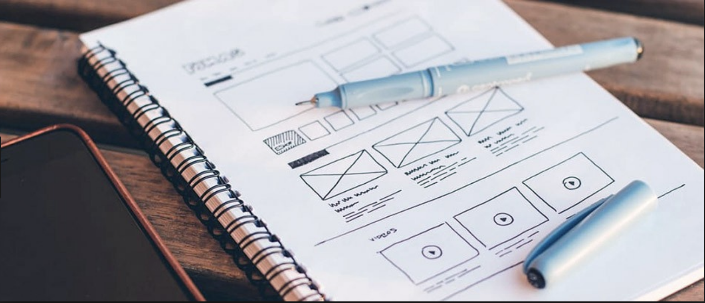

About me
Hi, I'm Isabel!
I'm a UX Designer, who has a background in Law, as a Paralegal. I worked in the areas of School Law, Personal Injury, Family Law, Litigation and a few others.
With these two backgrounds combined, I've learned many skills. I can advocate, pursuade and explain both verbally and written. I take the time to understand the human dynamics and interactions of a situation. I can use my analytical and logical reasoning to connect the dots and I have the ability to research, organize and can work well with a team in order to get the job done. Do you wanna hear more? Let's chat!